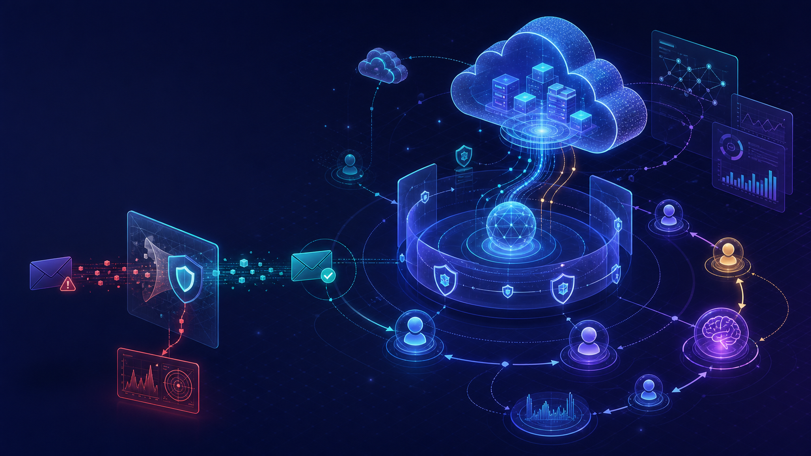
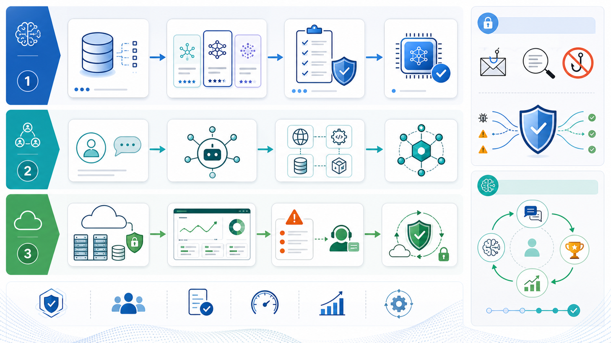
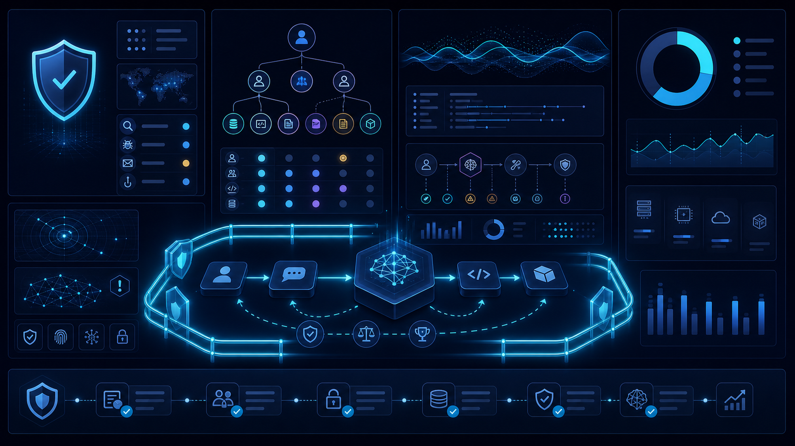

Amazon Bedrock 기반 인공지능 생성 피싱 탐지
AWS Machine Learning Blog는 생성형 인공지능으로 정교해진 피싱 이메일 위험과 Amazon Bedrock을 활용한 탐지 접근을 다뤘습니다. 보안팀 관점에서는 문장 품질이 좋아진 공격 메일을 규칙 기반 필터만으로 다루기 어려워질 수 있다는 점이 핵심입니다.
원문 블로그 열기이번 실행에서 확인한 AWS Korea Tech Blog, AWS News Blog, AWS Machine Learning Blog 데이터를 바탕으로 기업 의사결정자가 확인해야 할 기술 변화, 적용 관점, 리스크를 정리했습니다.



AWS Machine Learning Blog는 생성형 인공지능으로 정교해진 피싱 이메일 위험과 Amazon Bedrock을 활용한 탐지 접근을 다뤘습니다. 보안팀 관점에서는 문장 품질이 좋아진 공격 메일을 규칙 기반 필터만으로 다루기 어려워질 수 있다는 점이 핵심입니다.
원문 블로그 열기AWS Machine Learning Blog는 지원 티켓 처리나 콘텐츠 조정처럼 여러 단계의 도구 호출과 복구가 필요한 에이전트를 Amazon SageMaker AI에서 강화학습으로 학습하는 모범 사례를 설명했습니다.
원문 블로그 열기이번 수집 데이터에서는 아래 서비스와 기술 키워드가 확인되었습니다. 모델 학습, 보안 탐지, 에이전트 실행, 클라우드 기반 평가가 함께 검토 대상이 됩니다.
| 검토 영역 | 확인할 질문 | 근거 수준 |
|---|---|---|
| 기술 적합성 | 수집 글에서 언급된 서비스가 현재 사용 리전, 데이터 위치, 기존 계정 구조에 맞는지 확인해야 합니다. | 원문 기반, 세부 조건은 확인 필요 |
| 보안과 거버넌스 | 에이전트·모델·데이터 접근이 IAM, 감사 로그, 정책 통제와 연결되는지 검토해야 합니다. | 원문 주제 기반 |
| 비용과 성능 | 모델 선택, 추론량, 저장소·검색 계층 사용량에 따른 비용 변동을 별도로 산정해야 합니다. | 확인 필요 |
한국 기업은 AWS 서비스 가용 리전, 개인정보·산업별 규제, 내부 데이터 반출 기준, 기존 클라우드 운영 체계를 함께 검토해야 합니다. 이번 수집 데이터만으로 특정 산업별 규제 충족 여부를 단정할 수 없으므로 실제 도입 전 공식 문서와 계약 조건 확인이 필요합니다.
이번 자료를 근거로 할 때 실행 전략은 원문에서 확인된 기능별 적용 조건을 검증하는 방식이어야 합니다. 후보 서비스의 지원 범위, 권한 모델, 데이터 연결 방식, 로그·평가 가능성을 먼저 확인하고, 이후 조직의 보안·비용 기준과 비교하는 순서가 적절합니다.
아마존웹서비스 공식 블로그에서 확인한 클라우드, 인공지능, 데이터 변화 흐름을 추상적인 기업 기술 블로그 커버 이미지로 표현합니다. 이미지 안에는 글자를 넣지 않습니다.모델 선택, 에이전트 연결성, 클라우드 안정성의 세 흐름을 아이콘과 흐름선 중심으로 표현합니다. 이미지 안에는 글자를 넣지 않습니다.보안, 권한, 관측성, 비용 검토 포인트를 추상 대시보드와 가드레일로 표현합니다. 이미지 안에는 글자를 넣지 않습니다.